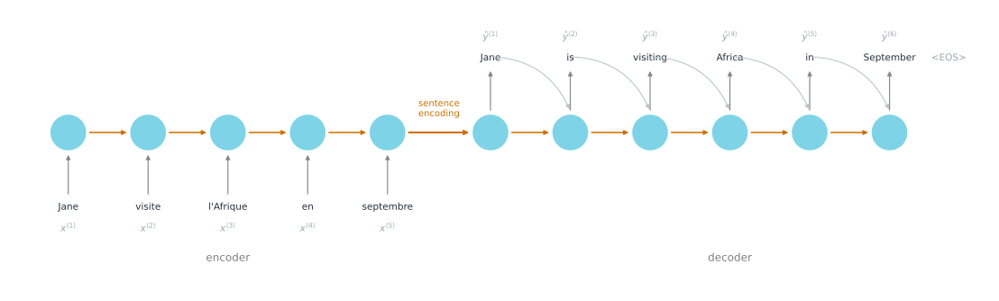
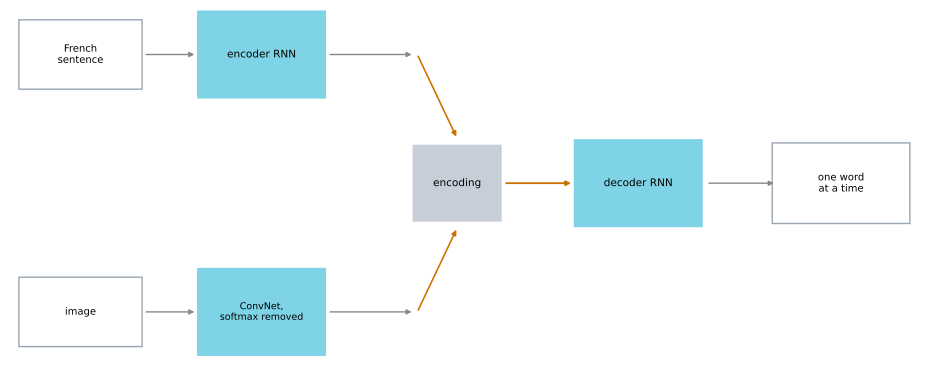
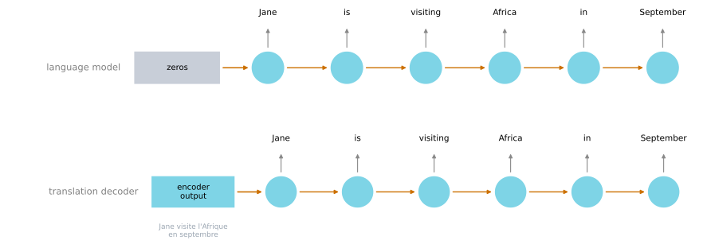
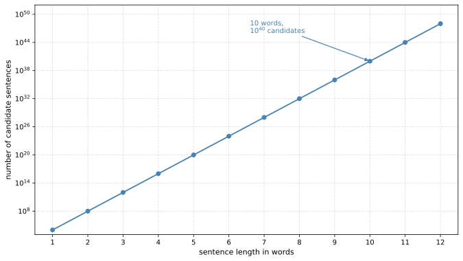

Sequence to Sequence Models
deep-learning
sequence-models
nlp
machine-translation
encoder-decoder
image-captioning
conditional-language-model
greedy-search
The encoder-decoder architecture behind machine translation and image captioning, why it is a conditional language model, and why greedy search fails.
Different Types of RNNs introduced the encoder-decoder shape as the answer to machine translation, where \(T_x\) and \(T_y\) differ because a French sentence and an English sentence take different numbers of words to say the same thing. This page builds that model properly.
It also shows that a subtlety comes with it. The model assigns a probability to every possible translation, and finding the best one turns out to be a search problem in its own right.
Take the French sentence Jane visite l'Afrique en septembre and the English translation Jane is visiting Africa in September. As usual \(x^{\langle 1 \rangle}\) through \(x^{\langle 5 \rangle}\) are the words of the input and \(y^{\langle 1 \rangle}\) through \(y^{\langle 6 \rangle}\) are the words of the output. The question is how to train a network that takes the sequence \(x\) and produces the sequence \(y\).
Encoder-Decoder Architecture
The answer is two networks rather than one. The ideas here come from Sutskever et al. (2014) and Cho et al. (2014).
The first network is the encoder. It is an RNN, and the cells can be GRU or LSTM blocks, fed the French words one at a time. It produces no output as it reads. After it has ingested the whole input sequence, its final activation is a vector that represents the sentence.
The second network is the decoder. It takes that vector as its starting state and is trained to emit the translation one word at a time, feeding each word it generates back in as the input to the next step, exactly the way the language model generated novel text. It stops when it emits the end-of-sentence token.
On a small screen, scroll horizontally to inspect the whole architecture.
One of the more remarkable results in deep learning is that this simply works. Given enough pairs of French and English sentences, a model trained to take a French sentence and produce the corresponding English translation does the job decently well. The encoder finds an encoding of the input, and the decoder generates the output from it.
Image Captioning
A very similar architecture works for captioning images. Given a photograph, produce a phrase such as a cat sitting on a chair.
The only thing that changes is the encoder. Instead of an RNN reading words, use a convolutional network reading pixels. Take a pretrained network such as AlexNet, remove its final softmax unit, and what remains produces a 4,096-dimensional feature vector for the image. That vector is the encoding, and it plays exactly the role the encoder RNN’s final activation played for translation.
Feed it to a decoder RNN whose job is to generate the caption one word at a time. This works well, especially when the caption to be generated is not too long.

This type of model was described by Mao et al. (2014), and Karpathy and Fei-Fei (2014) arrived at very similar work at about the same time and apparently independently.
Review Questions
1. The encoder produces no output while it reads the input sentence. What is it doing, and what is passed to the decoder?
Answer
It is building up its activation. At every step the encoder folds one more word into its hidden state, and after the last word that state is a vector which is meant to represent the whole sentence. That vector is what gets passed to the decoder as its starting state. Nothing else crosses the boundary between the two networks, which is exactly why the architecture is called encoder-decoder and, as the attention model later argues, exactly where its weakness lies.
1. Machine translation and image captioning use the same decoder. What changes between them?
Answer
Only the encoder. Translation encodes a sentence with an RNN, and captioning encodes a photograph with a convolutional network whose final softmax has been removed, leaving a 4,096-dimensional feature vector for something like AlexNet. Both produce a single vector, and from the decoder’s point of view a vector is a vector. That interchangeability is the reason the architecture generalized so quickly beyond translation.
Machine Translation as a Conditional Language Model
There are similarities between this model and the language model from Week 1, and one important difference.
The language model estimates the probability of a sentence, \(P(y^{\langle 1 \rangle}, \ldots, y^{\langle T_y \rangle})\), and it can also generate novel sentences by sampling. It starts from a vector of all zeros, and thereafter each input is just the previous output.
Now look at the decoder in the machine translation model. It is almost identical to that language model. The one difference is where it starts. Instead of beginning from a vector of all zeros, it begins from the encoding of the input sentence.

That is why this is called a conditional language model. Rather than modeling the probability of any sentence, it models the probability of an English output conditioned on a French input.
\[P(y^{\langle 1 \rangle}, \ldots, y^{\langle T_y \rangle} \mid x^{\langle 1 \rangle}, \ldots, x^{\langle T_x \rangle})\]
Read out loud, it estimates the chance that the translation is Jane is visiting Africa in September given the input Jane visite l'Afrique en septembre.
Sampling Is the Wrong Way to Use It
Given a French sentence, the model tells you the probability of many different English translations. Sampling from that distribution is what you would do with a plain language model, and it is not what you want here.
Sample once and you might get Jane is visiting Africa in September, which is good. Sample again and you might get Jane is going to be visiting Africa in September, which sounds a little awkward but is not terrible, just not the best. Another draw gives In September, Jane will visit Africa. And by chance you sometimes draw something genuinely bad, such as Her African friend welcomed Jane in September.
What you want instead is the single English sentence \(y\) that maximizes the conditional probability.
\[\arg\max_{y^{\langle 1 \rangle}, \ldots, y^{\langle T_y \rangle}} P(y^{\langle 1 \rangle}, \ldots, y^{\langle T_y \rangle} \mid x)\]
So building a translation system means writing an algorithm that finds that maximizing \(y\). The most common one is beam search. Before getting to it, it is worth seeing why the obvious approach does not work.
Why Greedy Search Fails
Greedy search is the natural first idea. Pick whatever first word is most likely according to the model. Then, having fixed that, pick whatever second word is most likely. Then the third, and so on.
The problem is that maximizing one word at a time does not maximize the sentence. Consider two candidate translations of Jane visite l'Afrique en septembre.
Jane is visiting Africa in SeptemberJane is going to be visiting Africa in September
The first is better. It is more succinct and hopefully the model gives it a higher \(P(y \mid x)\). The second is not a bad translation, just more verbose with unnecessary words.
Now watch greedy search work. It picks Jane, then is. At the third position it asks which single word is most likely to follow Jane is. Because going is a more common English word than visiting, the probability of Jane is going given the French input may well be higher than the probability of Jane is visiting. Greedy search takes going, and from there it is committed to the longer, worse option.
NoteThis is a hand-wavey argument, and it is an instance of a real phenomenon
Whether going actually beats visiting at position three depends on the model. The general point does not. When you want a sequence of words that together maximize a probability, taking the best word at each position one at a time is not guaranteed to get there, because a locally attractive choice can foreclose a better continuation.
The alternative is not to enumerate everything. With a vocabulary of 10,000 words and translations of up to ten words, there are \(10{,}000^{10}\) possible sentences of that length. That space cannot be scored exhaustively.

So the standard approach is an approximate search algorithm. It tries to pick the sentence \(y\) that maximizes the conditional probability, it will not always succeed, and it usually does a good enough job.
NoteWhat You Should Remember
- A sequence to sequence model is an encoder that reads the input into one vector and a decoder that generates the output from it.
- Swapping the encoder for a convolutional network turns translation into image captioning without touching the decoder.
- The decoder is a language model whose starting state is the encoding, which is why translation is a conditional language model.
- You want the most likely output rather than a random sample from the distribution.
- Greedy search maximizes one word at a time, which does not maximize the sentence.
- The space of candidate sentences is far too large to enumerate, so the search has to be approximate.
Review Questions
1. What makes a translation model conditional, and what is it conditioned on?
Answer
The starting state of the decoder. A plain language model begins from a vector of all zeros and therefore models \(P(y)\), the probability of any sentence. The translation decoder begins from the encoding of the input sentence and therefore models \(P(y \mid x)\), the probability of an English output given a specific French input. Structurally the two are the same chain of cells. The condition enters entirely through what the first cell receives.
1. Both a language model and a translation model can produce sentences. Why do you sample from one and search over the other?
Answer
Because the goals differ. A language model asked to write novel text should produce variety, and sampling gives it. A translation of a specific sentence has a right answer, or at least a small set of good ones, so variety is a defect. Sampling from \(P(y \mid x)\) returns a good translation sometimes, an awkward one sometimes, and occasionally something genuinely wrong. Since the model already assigns higher probability to the better translations, the job is to find the maximum rather than to draw from the distribution.
1. Greedy search picks the most likely word at every position. Give the argument for why this does not produce the most likely sentence.
Answer
Because the most likely word at a position is chosen without regard to what it makes possible afterwards. In the worked example, greedy search reaches Jane is and then compares single words. going is a common English word, so \(P(\text{going} \mid \text{Jane is}, x)\) may exceed \(P(\text{visiting} \mid \text{Jane is}, x)\), and greedy search takes it. That commits the sentence to Jane is going to be visiting Africa in September, which the model itself scores lower overall than Jane is visiting Africa in September. A locally best choice foreclosed the globally better continuation, and greedy search has no mechanism for reconsidering it.
1. True or false. The encoder-decoder model for machine translation is a conditional language model in the sense that the encoder portion is modeling the probability of the input sentence \(x\).
Answer
False. The model works out \(P(y \mid x)\), the probability of the output sentence given the input, and the word conditional refers to that conditioning on \(x\). Nothing in the architecture estimates \(P(x)\). The encoder does not score the French sentence at all. It reads it and compresses it into an encoding, and that encoding is what the decoder starts from. Only the decoder emits a probability distribution, and every distribution it emits is over output words.
References
- Cho, K., van Merriënboer, B., Gulcehre, C., Bahdanau, D., Bougares, F., Schwenk, H., et al. (2014). Learning phrase representations using RNN encoder-decoder for statistical machine translation. In Proceedings of the 2014 Conference on Empirical Methods in Natural Language Processing (EMNLP) (pp. 1724-1734). Association for Computational Linguistics. https://doi.org/10.3115/v1/D14-1179
- Karpathy, A., & Fei-Fei, L. (2014). Deep visual-semantic alignments for generating image descriptions. arXiv. https://doi.org/10.48550/arXiv.1412.2306
- Mao, J., Xu, W., Yang, Y., Wang, J., Huang, Z., & Yuille, A. (2014). Deep captioning with multimodal recurrent neural networks (m-RNN). arXiv. https://doi.org/10.48550/arXiv.1412.6632
- Sutskever, I., Vinyals, O., & Le, Q. V. (2014). Sequence to sequence learning with neural networks. arXiv. https://doi.org/10.48550/arXiv.1409.3215